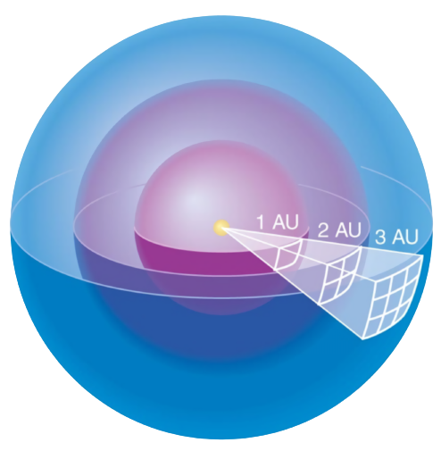

Stefan-Boltzmann Law
Luminosity (\(L\)) is the absolute measure of radiated electromagnetic power (a.k.a. light) emitted by something like a star, galaxy, or anything astronomical object far away.
Note
Luminosity remains the same no matter how far away you are - it is a property of the astronomical object.
For blackbodies there is a relation called the Stefan-Boltzmann law which allows us to calculate the luminosity \(L\).
where \(R\) is the radius of the star, \(\sigma\) is the Stefan-Boltzmann Constant and \(T\) is the temperature of the star's surface.
Hell's Artificial Sun
Scientists have somehow managed to make a small sun a trillionth as luminous as the sun (still very luminous btw), with radius of \(1309.67cm\). Find the temperature of the artificial sun, given \(L_\odot = 3.828\times 10^{26}\)
Rearranging gives:
(Note that this "star" probably won't undergo fusion)
Pistol Star
Pistol Star is an extremely luminous blue hypergiant star. Given that it's surface temperature is 12000K and has a luminosity 3.3 million times that of the sun, find its radius in terms of \(R_\odot\). (Take the surface temperature of the sun to be 5772K)
We can rewrite the stefan-boltzmann law as:
We can then find the ratio of \(R_\star\) and \(R_\odot\).
Luminous Blue Variable (LBV)
Luminous Blue Variable (LBV) stars greatly vary in visual brightness; however, their bolometric magnitude remains constant. Imagine a LBV star with a black body temperature of 5000 K at its maximum visual brightness, and 30,000 K at its minimum visual brightness. Calculate the ratio of the star radius between both situations above.
Since the bolometric magnitude remains constant, the total energy radiated from the star (Luminosity) remains constant. We already know:
Since \(L_\star\) remains constant,
The TL;DR of this is that \(L \propto T^4 R^2\)
Flux Density
To find the brightness (flux density of light, aka Intensity) of the star some distance away from it, we can use
where \(D\) is the distance from the star.
Intensity is confusion
You may sometimes see this being called "Intensity", which in this case is expressed as Power per unit area. Power per unit area (\(W/m^2\) or \(kg/s^3\)) can refer to any of the following:
- Flux density/Irradiance (power received by a surface per unit area)
- Radiosity (power leaving a surface per unit area)
- Radiant exitance (power emitted by a surface per unit area)
Confusingly these are all called intensity. In this case we are dealing with Flux density/Irradiance since we are concerned about the amount of power received by an area.
Yet more confusingly, Radiance, which is power emitted, reflected, transmitted or received by a surface, per unit solid angle per unit projected area is also called Intensity. This is a directional quantity instead, which means its a vector. It is expressed as Power per unit area per unit solid angle.
Due to the amount of confusion, one should always carefully check the meaning of these terms.
If you would like to know every single unit regarding light there is a handy wikipedia template
In this example, since astronomical object emits light in all directions (spherically symmetrical), we consider the "area" to be the surface area of a sphere with radius = distance between observer and light source (giving total surface area as \(4\pi D^2\))
This follows the inverse square law of light intensity (in this case meaning flux density) as it goes further away from its source.

The sun is a deadly lazer
Find the Intensity (Flux density) of the sun from earth, given that \(L_\odot = 3.828 \times 10^{26} W\) and \(1AU = 1.496 \times 10^{11} m\)
Just plug it into the formula:
\(L\) + Ratio
Star A and star B have identical radius and composition. If Star A is twice as hot as star B, but star A is twice as far away as star B, which star would have a larger intensity? If so how many times brighter is the brighter star.
You could do this "intuitively" by realizing that \(I \propto T^4\) and \(I\propto \frac{1}{D^2}\), hence \(T\) is "more powerful" than \(D\) and A is brighter by \(2^4/2^2 = 4\) times.
or you could:
Star A is brighter than B, and has 4 times the intensity of B
A big star goes boom boom boom
A supernova shines with a luminosity \(10^{10}\) times that of the Sun. If such a supernova appears in our sky as bright as the Sun, how far away (in parsec) from us must it be located?
As it appears to be as bright, they have the same Intensity (Flux Density) ($d_\oplus is the distance from the earth to the sun):
A Planet & Its Surface Temperature
A fast rotating planet of radius \(R\) with surface albedo \(\alpha\) is orbiting a star of luminosity \(L\). The orbital radius is \(d\). It is assumed here that, at equilibrium, all of the energy absorbed by the planet is re-emitted as a blackbody radiation.
- What is the radiation flux from the star at the planet’s surface?
- What is the total rate of energy absorbed by the planet?
- What is the reflected luminosity of the planet?
- What is the average blackbody temperature of the planet’s surface? (Ignore internal source of energy)
- If we were to assume that one side of the planet is always facing the star, what would be the average surface temperature of that side?
- For the planet in #4, if \(\alpha = 0.25\), \(d = 1.523 \text{AU}\) (1AU = \(1.496 \times 10^{11}\)) and \(L = L_\odot = 3.826 \times 10^{26}\), calculate surface temperature of the planet in Kelvins
-
The formula is already given to you, it is:
\[\text{Flux} = \frac{L}{4\pi d^2}\] -
Energy reaching the planet is \(\text{Flux}\cdot\text{Area}\). The Area of the planet receiving light from the star can be approximated to be \(\pi R^2\). Hence:
\[\text{Flux}\cdot\text{Area} = \frac{L}{4\pi d^2}\cdot\pi R^2 = \frac{LR^2}{4d^2}\]The albedo \(\alpha\) is actually just the percent of incoming light reflected. Anything that isn't reflected is absorbed, so the amount of energy absorbed is:
\[E_\text{absorbed} = (1-\alpha)\frac{LR^2}{4d^2}\] -
Albedo, as mentioned before, is the percent of incoming light reflected. Hence:
\[E_\text{reflected} = \alpha\frac{LR^2}{4d^2}\] -
Here, we have to balance energy absorbed from the star and energy emitted through blackbody radiation.
\[ \begin{align*} \text{Energy Absorbed from star} &= \text{Energy Emitted by blackbody radiation}\\ (1-\alpha)\frac{LR^2}{4d^2} &= 4\pi R^2 \sigma T^4\\ \therefore T &= \sqrt[4]{\frac{(1-\alpha)L}{16\pi\sigma d^2}} \end{align*} \]Note: this is independent of \(R\), the radius of the planet
-
In this case, only one side of the planet will be absorbing energy, and hence only one side will be emitting energy via blackbody radiation. So we use \(2\pi R^2 \sigma T^4\) instead:
\[ \begin{align*} \text{Energy Absorbed from star} &= \text{Energy Emitted by blackbody radiation}\\ (1-\alpha)\frac{LR^2}{4d^2} &= 2\pi R^2 \sigma T^4\\ \therefore T &= \sqrt[4]{\frac{(1-\alpha)L}{8\pi\sigma d^2}} \end{align*} \] -
Plug in:
\[ \begin{align*} \therefore T &= \sqrt[4]{\frac{(1-\alpha)L}{8\pi\sigma d^2}}\\ &= \sqrt[4]{\frac{(1-0.25)\times 3.826\times 10^{26}}{16\pi\times 5.67 \times 10^{-8} (1.523\times1.496\times10^{11})^2}}\\ &=209.9 \approx 210 \text{K} \end{align*} \]